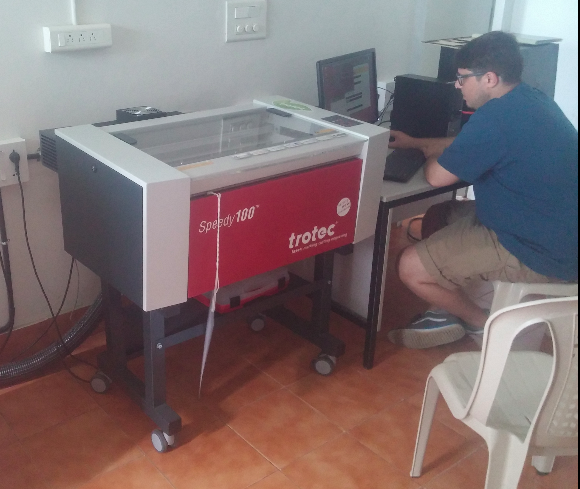
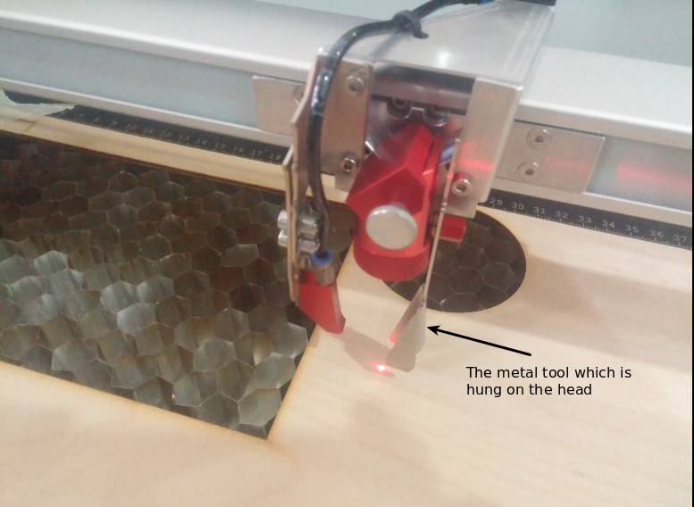
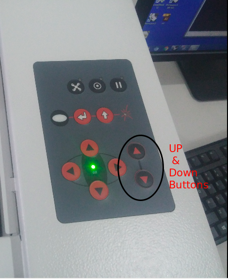
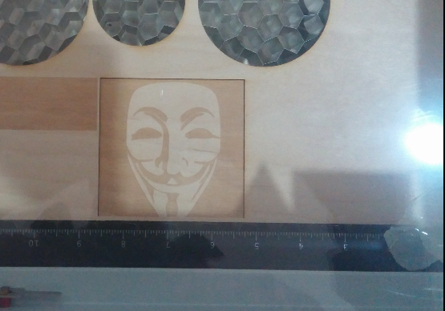
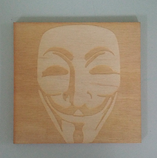

Unforyunately I was absent on this day. It was election in our place and I must vote. It takes about 5-6 hours from my place to fablab so no way to reach fablab after giving the vote.
On this day the they discussrd about project. The found the problems of fablab so that the solutions for each problem can be taken as project.
We spent these days for doing a project. Since the time is less Luciano asked us to do projects in group. So me and Sibu are doing the project togethr. The project is making a Soldering station. We selected this idea because there is a damaged soldering iron of "Weller" in the fab lab. The only part which is in condition is its tip. So we decided to make a soldering station using the iron of Weller.
I am documenting the project seperately , Here is the link.
Project
Thursday(day 14) is the last day with Luciano at fablab kochi.Since our laser cutter is not working properly, tomorrow we all will go to Fablab Trivandrum for learning about Laser cutter. After that Luciano will be staying there in trivandrum and Fransisco will be our trainer for the next week.

Off to Trivandrum for the Laser Cutter
Since the laser cutter in our lab is not working , we went to trivandrum fablab which is about to travel 5-6 Hour. We Luciano went there yesterday itself and we left Kochi at 5AM morning. Around 10 AM we reached Fablab, Trivandrum. Both Fransisco and Luciano was there.
The laser cutter there is of Trotec.Laser cutter is a machine which can cut small wood, acrylic, fibers, and even metel (some moachines with higher power).There is no Fabmodule for laser cutter there right now so we used the deafault windows software provided by Trotec. We all had some confusion with using it. Not confusion actually, many of the options are not working properly in that software, but we fix it finally. Fab modules are necessary for laser cutter also. Heard it is available in the new web version of fab module. Anyway it was running in windows OS there

We hav been designing all the things in rhino. So here also we started with Rhino.
The steps are
We will design somthing in Rhino
Will give print option
Select printer as Trotec
A new window by trotec software will come
Select the options (cut or engrave)
Finally the cut
By default, the trotec software has some clor code. That means if the drawing are in black (it can be changed by the user) it will cut the thing (what we want to cut), and if it is in red , it will engrave. So choose the color color of the design according to the operaton we want to do.
The cut and the engrave is differntiated according to the speed. If the laser is going very slowly, then it will cut the thing. But if it is goingso fast, then there is no enough time and power to cut the thing, so it engraves the material. So also by adjusting the speed, we can choose the option as cut or engrave. This is what we did. It was not working properly with the color options (some problem, don't know why) . So we choosed the operation by adjusting the speed.
Following are the steps what i did. Sorry that I couldn't take the screenshots.
The design
Downloaded a pic from the Internet.
Using gimp made it to .png and grayscale mode. Then i imported the pic in to Rhino usith the command "Pictureframe". Resized it. Gave print option and selected trotec as printer. So the trotec window came out. Clicked on the "Set" button to place our design on the required portion of the material. So the position of the material where to be cut/ engrave is fixed
I am engraving this pic in a wood piece. So i choose the material as wood. There is a small button in the "Material settings". This is to set the power and speed. Clicked on it. Now another window will come. Set the process corresponding to BLACK color as engrave. Gave the power as 65 and speed as 100. Then clicked OK.
Next is to set the Z axis of the laser cutter. There are buttons on the laser cutter for adjusting Z axis. There is a metal tool which is to be hung on the head of laser cuttrer. Then slowly pove the plattform (where the wood to be cut is placed) upwards by UP button. When it touches the hanging tool, the tool will falll down. Now this is the required Z axis. So Z axis is set


Next is to give print. The machine will start printing.

For cutting it out we have to do the same procedure like we did in PCB milling. We should try with another cut out file. Althogh there is option to do both steps in a single step with two different colours, it was not working properly.This is why we tried seperately with seperate files.
Repeat all the procedure. Hide the image in rhino and shoe only the cut out border. Give print, select trotec ,set material as wood. Next comes the change. Select the process for black color as cut. give speed as 1.5 and power as 90. Give print
Now the laser cutter will start cutting.
Here the final product
